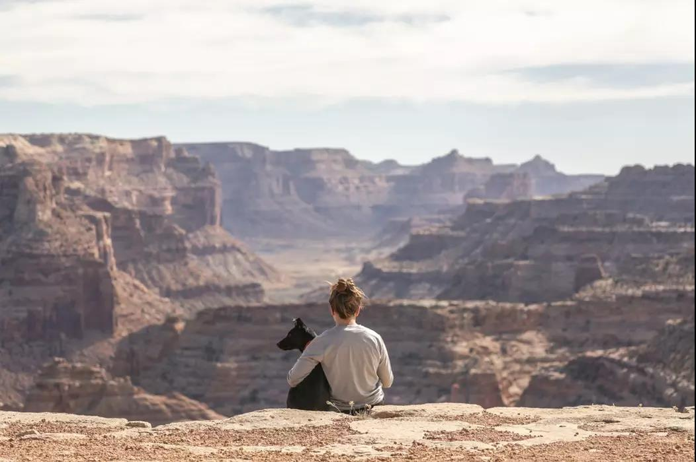

请回答2017互联网：谁不是一边成为历史，一边忙着再造自己？

1
许知远的单向街书店举办了第三届文学节，演讲部分有一段话打动我：没有一代人是孤立无援的，所有人都是漫长历史中的一个环节。他们的讲述，是宽阔世界里的回声，也是历史的影子。而个体与时代相互交缠的命运，是我们的秘密年轮。归根结底，我们在青年时代所有的言语与行动，无非是想亲身验证：这个时代年轻过吗？它会变成什么样？
在采访马东后成为网红后的许知远，其实也采访了林志玲。他在朋友圈配上了自己和林志玲的大图海报，然后说，感觉一只脚踏入娱乐业，不知是扩展了人生，丰富了知识分子的维度，还是另一种堕落。
以前的许知远，可能是经观书评写作者，是一个作家，也是一家书店的老板。与其说是马东们造就了他的爆红，不如说是他因为做《十三邀》而不得不拥抱互联网，进而被互联网所改变。
而互联网所改变的，远不止2017年的许知远，我们每个人或多或少都被这摧枯拉朽的态势所推着向前奔跑。这些改变的显著标志则呈现在一家家公司身上，BAT、网易、小米、京东、微博、今日头条；一个个新物种上，网易严选酒店、盒马鲜生、无人超市；也印刻在一个个人物身上，如互联网大佬马云、马化腾、李彦宏、丁磊、雷军、刘强东，当然还有贾跃亭。
2017年的互联网，是充满娱乐性和戏剧性的，同时，它又是某些内核回归的一年，是从轻向重的转捩点。
2
时间拨回8年前，5月的一天，阿里巴巴的张勇与他的伙伴们讨论，似乎可以在秋季搞一个类似美国感恩节大促销的活动，他们为日子的选择想破了头，不知是谁突然提议：“要不就在11月11日吧，光棍节，闲着也是闲着，不如忽悠他们上网来购物。”
于是乎，我们看到了剁手的淘宝双十一，后来这个节日更多被称之为天猫双十一，这其实已经透露出，阿里也需要颠覆自我。为什么是游戏企业赚到了中国互联网的第一桶金，除了商业模式明晰以外，还因为那个时候很多的网民是高中生、大学生，他们的核心诉求就是娱乐。当这些人毕业了，追求便宜好货且需要方便，淘宝一下子流行起来。
如果说2000年前后的新闻门户是中国互联网的第一个冲击波，那么以阿里和京东为代表的电商则是第二次，前者改变了国人与信息的关系，后者改变了国人与商品的关系。而到了2011年，互联网则开始改变消费者与服务的关系，团购元年来了，O2O盛行。
上百亿的资本和数十万年轻人加入到了千团大战当中，吴波的拉手网风靡一时，张涛的大众点评从上海起步也不甘落后，但后来的故事我们都知道了，吴波和张涛这两个名字早已被淡忘，九败一胜的王兴笑到了最后。
在团购雨后春笋般出现的时候，垂直电商转向综合电商成为一个趋势，京东、当当就是代表，从3C或图书，扩展到了日用百货、服装、家居等等。而另外一面，2010和2011年开始，垂直电商吸引资本的黄金时代来临。那时候微信还在娘胎，微博刚刚兴起，在人人网和qq空间，“凡客体”刷屏，韩寒穿着白T恤的形象深入人心，他既不是导演也不是小野她爹。
也是在“凡客体”大火的这年，海归陈欧上线了聚美优品的前团美网，后来转型为化妆品B2C电商平台。2012年，微博大V陈欧一则“我为自己代言”的文案，成为了励志故事，被众多80后所艳羡。唯品会则在美国成功IPO，垂直电商迎来了其巅峰时期。
我们眼看垂直电商楼起，而接下来四年，我们又眼看他们楼塌。去年，市值仅剩9亿美元的聚美优品宣布私有化从美股退市，陈欧开始遭到了各式各样的吐槽，又以李诞在《脱口秀大会》的diss为最盛。唯品会九年沉浮，总算在近日抱稳了腾讯和京东的大腿。
3
最惨的可能还是陈年，他的员工数量从一万多人削减到180人。在流行被引爆之后，凡客突然在品类上迷失，其产品从主打的衬衫、T恤和帆布鞋迅速扩展开去。在品牌销售和平台销售之间，在规模和产业链上，凡客出现了模式抉择的迷失。
陈年后来的自救多少显得有些吃力，而他本人又因为一档综艺节目剪辑diss周杰伦的片段，而饱受互联网舆论暴力的摧残。
城头改换大王旗，还没等陈年、陈欧重回舞台中心，新的风口又来了，这也意味着新的人物登场了。2015年，供需主导权的改变悄然孕育了中国的共享经济。它仍旧发轫于互联网平台，基于闲置资源使用权的精准匹配与联结，实现生产要素的社会化，提高存量资产的使用效率。
快的和滴滴的线下争夺打得不可开交，但最终他们却在资本力量下于情人节那天宣布合并，他们走到了一起，还拉着腾讯和阿里也走到了一起。但是这段爱情并没有持续多久，滴滴这个品牌最终吞噬了快的，又在之后吞掉了uber中国。也是在2015年，58同城和赶集网合并了，美团和大众点评合并了。
对于腾讯促进的业界几项大合并，尤其是共享出行领域的，马化腾说，补贴烧钱大战推动了移动支付的普及，这是意想不到的一个收获。腾讯开放的投资战略，也让产品经理马化腾成为了江湖大佬背后的大佬，今年乌镇互联网大会的东兴局可见一斑。
4
2015年是共享经济的元年，也可以说是乐视生态的元年。乐视过去两年蒙眼狂奔，为梦想窒息。到现在为止，确实也没充分证据证明贾跃亭从一开始就要做庞氏骗局，他看起来还是很勤奋的，乐视也挖来了各个领域的牛人。
但乐视的局实在太大了，最终由贾跃亭热衷的超级汽车撕开了一个口子，而实际的窟窿又比我们想象得还大。生态化反最终偃旗息鼓，像是和历史开了个玩笑一样。
而比贾跃亭更早提出互联网硬件生态闭环构想的雷军，却带领小米走出了低谷。小米加大地面渠道的铺设，雷军甚至跑到河南农村的鸡毛小店去取经。所谓生态也在悄然转变，不再刻意寻求产品互联互通，而是在销售平台上做整合。
我们看到有曾经的庞然大物在崩塌，也有巨头在变革。百度从如日中天到去年遭遇重重劫数，舆论声讨之下李彦宏开始反思百度的管理文化和战略路径。微软华人第一高管陆奇加盟，将百度这艘大船ALL IN在人工智能上。历经教训，百度似乎有了新的气质，市值也得到修复。
也曾跌入过谷底的微博，今年也是彻底走过了二次崛起的阶段。得益于内容分发效率的提升，以及社交化、视频化和商业化的强势驱动，微博又开启了超越Twitter之后新的征程。做大平台、基于内容社交赋能、基于粉丝变现赋能是微博决战下半场的武器。
而它现阶段最大的对手，就是独立于BAT之外的今日头条。带着几个爆款产品，不断挑战行业的今日头条，已经成为TMD里最亮眼的那个。
5
最稳的当然还是腾讯和阿里。尤其从今年开始，互联网创业就是TO AT的声音越来越多。腾讯和阿里自身业务分支越来越丰富，同时还爆炒赛道，共享单车繁荣起来了，移动支付继续下沉，人工智能上他们也在加速布局。
从去年到今年，直播迅速迎来高潮，旋即又迅速退水。短视频浪潮又来了，MCN开始流行。我们看到，风口一个个吹过，但内容和电商的红利一直都存在。内容创业者之春过去了吗?实际上，每个月都出来爆款公号这一点就证明，只要能做出好的内容，什么时候入场都是春天。
电商也是如此。龙头阿里顺势提出了新零售，盒马鲜生、无人咖啡店等新物种诞生。腾讯虽然自己不做电商，但把值得投资的电商企业都投资了。而且要知道，微信生态里的买卖交易数字已经高得吓人。通过微信，腾讯切入智慧零售的武器也有了，而小程序很可能是下一个电商增长极。
正如吴晓波所说，流行，如同字面呈现所示，它“既流且行”，是不确定的，是运动中的，而且未必按预想的方向衍生及变异。因此，引爆者如何将流行控制住，导向为一种可以被量化和可持续运营的商业能力，便成为一个更实际，也是最终具有价值的过程。
陈年做电商就是没有把流行控制住，而擅长游戏的网易却打开了新电商模式的阀门。凡客盲目扩张SKU，而网易做严选。而且，丁磊探索出了一条与阿里、京东不同的路：采买、仓库和售后等全产业链环节，以及最关键的定价权都掌握在自己手上。
在严选的合作名单中，不乏Coach、无印良品、双立人等各类知名中高端品牌的中国制造商。ODM模式，环节上的效率优化，保证了用户到手的商品有着高性价比。丁磊曾说要花三五年时间，在电商上面再造一个网易，现在看来这个想法是有可能实现的。
这种模式也带动了一批“严选模式”的新电商崛起，比如小米的米家有品、淘宝心选等也在采用。像网易严选和小米这样参与到产品质量把控，深入制造业的打法，在此前的互联网企业中几乎没有出现过。互联网由轻向重转变，今年是属于“严选模式”电商的元年。
而如果我们从当下的互联网环境来看，其实各个领域又何尝不是在做”严选”。
比如，投资圈走过了看人看脸的时代，能不能做出好产品，有没有行得通的商业模式成为创业王道。甚至我们看到，现在VC的日子不好过了，PE活得更为滋润。
在同一个舞台上，贾跃亭没有完成的梦想，蔚来汽车的李斌却实现了。整车质量背后是极其复杂的工业流程，李斌说，整体质量在于车辆设计质量、零部件质量，最后才是生产质量。从供应链、生产到品控，对量产上市的汽车来说，标准可想而知。
搞知识付费的中年知识分子，无论是高晓松、马东、罗振宇、吴晓波还是许知远，也都得精心雕琢自己的内容，不管行业里如何吐槽，他们至少要对花了钱订阅的用户负责。
6
2017年，还有很多互联网事件和热点值得说道，比如扎心了老铁、嘻哈、王者荣耀、全面屏手机、吃鸡等等。
这一年，对我个人来说，也是充满变化的一年。从为企业打工，到全职自媒体，我走了一条不太安稳但又看似自由的路，也是赶了一趟晚集。
如果说，我现在写作是为了什么，养活自己、赚钱买房自然是第一位的。有时候回头看，发现，好像也记录了一点什么，评论了一些什么，它们构成了当下互联网世界争议与变数的一部分。
再过不久，2017就要过去了，我很怀念它。逃离北上广实现了吗？留在北上广的又过得怎么样？无论如何，我们又得心怀焦虑和希望，奔向新的互联网纪元。
原文链接：http://mp.weixin.qq.com/s/nrbTi_4FCdSf6xJvMkWipQ
真香图书馆
Copyright © 2014-2018 真香图书馆 版权所有(第六版)
邮政编码：610041
设计制作：真香图书馆信息自动化部爱诚科技 地址：肇庆市文翁路98号 网址：http://www.cdclib.org
读者意见邮箱：cdlibdzfw@foxmail.com
 川公网安备 51010502010606号
蜀ICP备08104443号-6
川公网安备 51010502010606号
蜀ICP备08104443号-6
设计制作：真香图书馆信息自动化部爱诚科技 地址：肇庆市文翁路98号 网址：http://www.cdclib.org
读者意见邮箱：cdlibdzfw@foxmail.com
川公网安备 51010502010606号
蜀ICP备08104443号-6
- 全国古籍重点保护单位
- 肇庆市古籍保护中心
- 国家一级图书馆
- 公共文化措施
- 全民阅读示范基地
- 全国古籍重点保护单位
- 肇庆市古籍保护中心
- 国家一级图书馆
- 公共文化措施
- 全民阅读示范基地
- 全国古籍重点保护单位
- 肇庆市古籍保护中心
- 国家一级图书馆
- 公共文化措施
- 全民阅读示范基地
- 全国古籍重点保护单位
- 肇庆市古籍保护中心
- 国家一级图书馆
- 公共文化措施
- 全民阅读示范基地